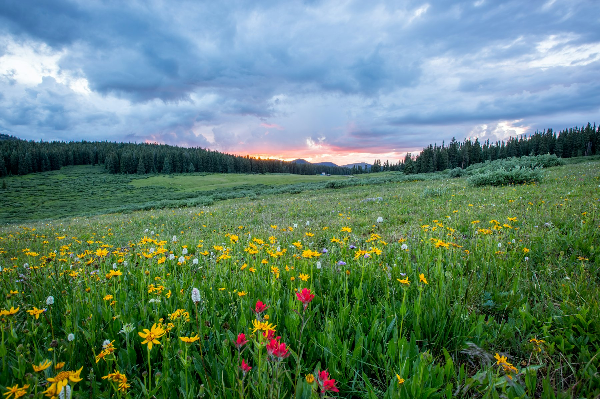

Grant-ready tools, plain-language courses, and done-for-you support for Ontario farmers and landowners.

Know exactly which grants you qualify for and when they close. Enter your email and we'll send it now.
No spam. Unsubscribe any time.
New guide → How to apply for the Agricultural Stewardship Initiative in 2026
A ready-to-use spreadsheet that tracks your fields, land use, and best-management practices — and auto-builds the numbers and maps you need for cost-share grants worth up to $90,000. Built for the Agricultural Stewardship Initiative and On-Farm Climate Action Fund.
Available soon — join the waitlist to be first in line.
A step-by-step, plain-language course that takes you from "which grants exist" to "application submitted" — with fill-in-the-blank templates and checklists. No experience needed.
Pre-sale: get the full workbook & templates now — video lessons added by September, free to early buyers.
Available soon — join the waitlist to be first in line.
We deploy a simple survey to your members or clients and deliver polished, branded stewardship reports — accurately and fast.
Request a quote →A fast desktop screening report for your site — flag potential species-at-risk and habitats before you plan or apply. Clear, professional, turned around quickly.
Prefer we handle it? We'll write and assemble your agri-environmental grant application end to end. Flat-fee pricing — never a cut of your award.
Book a call →[QUOTE — the client's own words about working with you or using the toolkit]
[QUOTE]
[QUOTE]
Quadrat Studio is Susan Frye — an ecologist finishing a PhD in forestry (defending 2026) with more than a decade of hands-on field and land-use experience across Ontario. She combines that ecological expertise with grant know-how to help landowners and organizations protect and fund their land.
The paperwork behind stewardship funding shouldn't be the reason good land projects never happen. Quadrat Studio exists to make the numbers, the maps, and the applications simple — so more Ontario farmers and landowners can actually get the money they qualify for.
More about Susan →